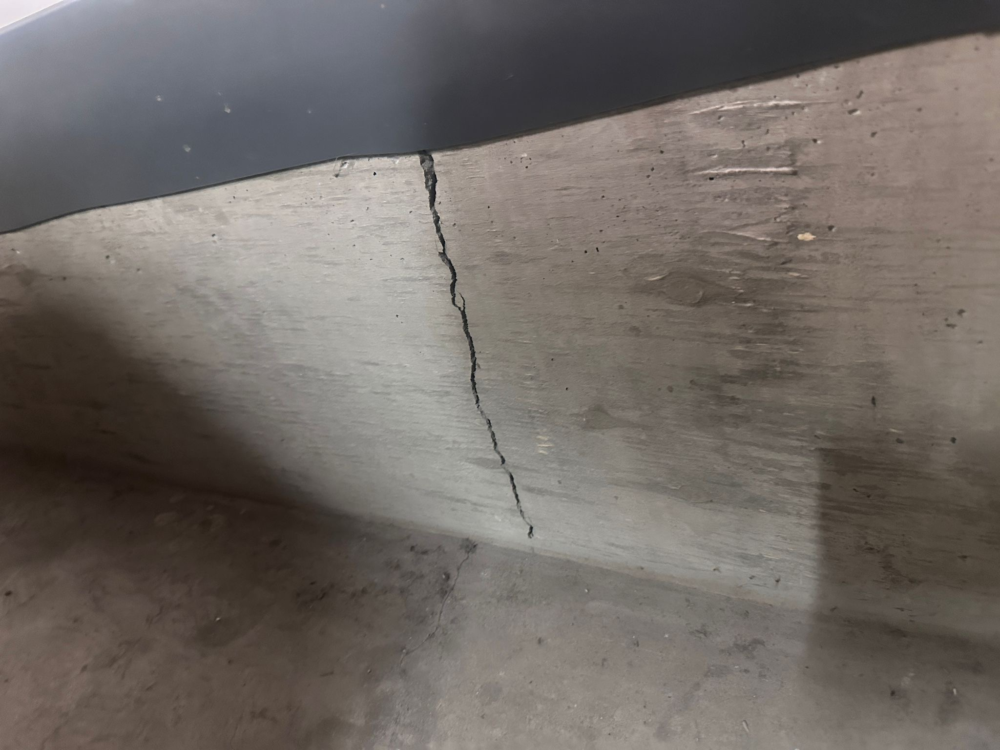

4605 Henri Bourassa – Syndicate Accountability Report
Prepared by: Feedback gathered by a group of concerned Co-Owners
Date: November 8th, 2025
Purpose of this Report
!! Please read if you care the well being and finances of the building!!
This report has been prepared to raise awareness among all co-owners regarding serious governance, financial, and compliance concerns observed within the current Syndicat des copropriétaires du 4605 Henri-Bourassa Ouest.
Its purpose is to promote accountability, transparency, and lawful administration in the management of our shared property — not to assign blame, but to protect the collective interests and investments of every co-owner.
The syndicate is legally bound by the Civil Code of Québec (Articles 1038–1109) to act with diligence, good faith, and impartiality in managing the building, its finances, and its safety. When these obligations are not respected, the result is loss of trust, reduced property value, and exposure to legal and financial risks for all co-owners.
Section 1 – Concerns Regarding Potential Conflicts of Interest and Administrative Mismanagement
(Anonymous concerns gathered from multiple co-owners)
This section summarizes questions and observations raised by several co-owners regarding potential conflicts of interest, lack of impartial oversight, and questionable financial practices within the current syndicate administration. These points are presented not as accusations, but as matters requiring clarification and transparency in accordance with the Civil Code of Québec, particularly Articles 321, 322, and 1070 to 1077 C.C.Q., which impose duties of prudence, diligence, honesty, and loyalty on all administrators acting in a fiduciary capacity for the co-ownership.
1.1 Governance and Lack of Unbiased Oversight
The current structure of the administration appears to be heavily influenced by personal relationships among its members. When an administration is composed of close friends or allied individuals, objectivity and accountability can be compromised.
- Under Article 322 C.C.Q., administrators must avoid situations where personal interests conflict with the syndicate’s interests.
- Administrative decisions — including expenditures, project selection, and hiring — must be collective and transparent.
- Work prioritized often aligns with tasks administrators can perform personally, while critical issues (carpet replacement, lighting, floor/mold handling) are delayed or ignored.
- This risks physical deterioration of the building and decreases property value for co-owners.
1.2 Missing or Unexplained Revenues
Several co-owners have expressed concern regarding the absence of transparency in recording certain revenues in the syndicate’s financial statements:
a. Key Sales (Medico Lobby Keys)
- Building keys sold, but no record of revenue appears in statements.
- Missing key boxes with no accounting for quantity sold, price, or deposit into official accounts.
- Violates Article 1070 C.C.Q. requiring accurate and accessible financial records.
b. Parking Lot Rentals
- Questions about the number of parking spaces owned, rented, and to whom.
- No written record of revenues or equitable access process.
- Potential self-dealing by administrators renting spaces at higher rates.
c. Savings Account Interest and Bank Charges
- Interest from savings accounts missing in statements.
- Bank charges increased sharply (~$1,138 → ~$1,739) without explanation.
- Page 7 of financial statements lacks signature — questions of validity.
d. Administration Member Expenses
- One administrator reportedly paid themselves ~$19,000 (March–October 2025) — requires transparent justification to co-owners.
1.3 Questions Raised by Co-Owners
Concerns regarding disbursements, authorizations, and budget inconsistencies include:
You can add more questions anonymously by emailing:
brindamailvaganam@gmail.com
Or join our WhatsApp group of co-owners by sending your phone number to the above email or calling:
514-264-9527.
Section 2: RBQ and Legal Compliance Concerns
This section is Prepared by: Brinda Mailvaganam, Engineer& RBQ General Contractor (License No. 5862 8967-01). Owner of 13rinda Inc. (Quebec Enterprise No. 1180638968), a building management and construction firm. Former Public Safety agent of Government of Canada
This section provides professional observations regarding recent work carried out in our building. While the administration’s intentions to reduce costs may be well-meaning, several projects have been executed in a manner that violates Québec law, RBQ regulations, and the duties of a syndicate under the Civil Code of Québec, potentially exposing co-owners to financial and safety risks.
1. Unauthorized and Substandard Construction Work
Significant renovations this year have cost approximately $200,000, a nearly 40% increase from last year. It is the right of co-owners to know what work was done, by whom, and at what cost, as outlined under the Civil Code of Québec, art. 1079 and 1080, which mandate transparency and prudent management of common property.
Garage Flood Prevention – Concrete Wall Project
One notable example is the construction of concrete walls around the garage for flood prevention. A prototype design was provided by 13rinda Inc., with input from a structural engineer, with a quoted labour cost of approximately $10,000. Instead, the administration chose work to be done by a contractor personally connected to the current administration and paid over $30,000 in labor to an invoice which did not have an RBQ license—a legal requirement. Even when requested, there is no transparency in which quotes were submitted for the job, why the contractor was chosen, and what their license number is. This exposes co-owners to liability and additional repair costs. Within a few months, major cracks have appeared in the newly constructed walls, raising concerns regarding structural integrity and potential water infiltration.
Key Issues:
- The concrete walls do not meet the height specifications outlined in the original quote.
- The locker section was left incomplete (but the "contractors" were made their full payment).
-
The principle of controlled joints was not applied, resulting in random cracking.
 - Who will be responsible to pay for this mistake? Will it be the co-owners who will need to compensate for the lack of quality work being done?
As both the designer of the prototype and a licensed professional, I conclude that the construction is structurally unsound and unlikely to meet its intended life expectancy. These issues suggest either bias due to personal relationships or a lack of accountability in contractor selection.
Legal and Procedural Obligations:
- Contractors must be chosen following a transparent selection and voting process.
- The administration has a legal responsibility to verify the qualifications and RBQ licenses of contractors.
- Co-owners’ investments must be protected to ensure funds are spent on high-quality work rather than remedial repairs.
2. Illegal Outdoor Fence Construction
The outdoor fence was constructed by Janitor Michael. While Michael is highly regarded, hardworking, and talented, it is not appropriate for Administration to assign him construction work, especially work that requires a valid RBQ license, which he does not hold (Construction Code, CQLR c B-1.1, arts. 5–7). Assigning unlicensed personnel to perform construction work is illegal under Quebec law and could expose the syndicate and co-owners to regulatory penalties.
Administration had placed a bench outdoors to create a welcoming space for residents. However, to protect co-owners from liability, a proper safety fence is legally required (Civil Code of Québec, art. 1457; Safety Code, CQLR c S-2.1, art. 1). Instead, Michael was tasked (by *ONE of the admin, without the other admins being aware of this project) with placing two wooden posts and chains.
- Resident Safety: The fence is structurally inadequate, posing a clear hazard under Civil Code of Québec (arts. 1457–1460).
- Financial and Investment Risk: Substandard construction may reduce property value and require costly future repairs.
- Liability: Co-owners could be held legally responsible for accidents, and insurance coverage may be denied due to unlicensed work (Civil Code art. 1479; RBQ regulations).
Administration Response: The administration reportedly stated: “Don’t worry, the building has insurance.”
⚠️ INSURANCE WILL NOT COVER ANY DAMAGES OR LAWSUITS RESULTING FROM UNLICENSED WORK! Co-owners could face significant financial liability and large fines if accidents occur due to unlicensed construction. Why are we knowingly breaking the law to save money? Why are we jeopardizing the investments and safety of hundreds of co-owners?
3. Illegal Electrical Work and Camera Installation
Approximately ~40 cameras were installed with electrical work performed by the administration without RBQ electrical qualifications. Improper handling of electricity in common areas endangers lives and violates Civil Code of Québec (art. 1457), Construction Code, and RBQ regulations (CQLR c B-1.1, art. 5–7). Insurance may not cover damages or accidents arising from unlicensed work.
The DIY installation led to a major power failure in the garage, requiring professional electricians. Emergency exit lighting was non-functional for nearly a week. Attempts by co-owners to obtain information were ignored, showing a lack of transparency. Concentrated power within administration contributes to legal, safety, and financial risks.
⚠️ Questions for the Administration and Co-Owners:
- What findings did the professional electrical company indicate as the issue with the building after the cameras were installed by the administration themselves?
- Was there an invoice of $15,000 by the electrician after this visit?
- Were the administrators advised of potential overloading of the electrical capacity due to the installation of all additional cameras?
- We need full transparency. In case of a fire due to the self-installation of these cameras, will the insurance company cover the co-owners?
- Has a licensed electrician confirmed that the building is currently safe?
4. Unfinished & Unprofessional Work
Do-it-yourself installation of cameras left unpatched holes, causing:
- Air leakage affecting energy efficiency.
- Exposed, potentially illegal wiring.
- Aesthetic damage that can reduce property value.
Under Civil Code of Québec (arts. 1457–1460), co-owners have a right to expect safe, professional maintenance. Transparency and adherence to law are required to protect investments.
5. Roof Mortor Installation and Fire Safety Concerns
Roof mortor work performed by administration without RBQ licensing (CQLR c B-1.1, arts. 5–7) and connected to a timer:
- Disables ventilation overnight (11 PM–7 AM).
- Prevents proper operation of kitchen fans, dryers, and bathroom ventilation.
- Creates fire hazards under Safety Code, CQLR c S-2.1, art. 1.
This exposes co-owners to serious liability.
6. Ventilation Repairs and Lack of Transparency
Previous ventilation problem ($15,000 repair) lacked clear documentation on work done, by whom, and costs. Unlicensed repairs increase risks, violating co-owners’ right to information (Civil Code of Québec, art. 342).
7. Flooding and Improper Response
Recent flooding affected 1st and 3rd floors; professional mitigation advice was ignored. Consequences include potential mold, increased repair costs, and legal liability (Civil Code of Québec, arts. 1457–1460).
8. Pending Fines and Prioritization of Mandatory Maintenance
Building faces $20,000 in fines from the City and RBQ for overdue mandatory maintenance. Syndicate must prioritize legally required repairs over discretionary projects, ensure licensed contractors, and provide full transparency on tasks, priorities, responsible parties, and timelines.
Final Disclaimer and Call for Transparency
I, Brinda Mailvaganam, engineer and licensed RBQ general contractor, declined membership and quotes to the administration due to legal and safety concerns. Co-owners should:
- Introduce unbiased oversight to the administration.
- Ensure all construction and safety work is licensed and compliant with Quebec law.
- Demand full transparency in operations, repairs, and expenditures.
- Limit concentration of power in administration decisions.
- Verify contractors’ RBQ licenses before engaging work.
- Adhere to professional advice and engineering standards.
- Introduce independent oversight to prevent unilateral, potentially illegal decision-making.
Our shared investments, safety, and long-term building integrity depend on adherence to law, professional standards, and transparent governance.
Prepared by: Brinda Mailvaganam, Engineer & RBQ General Contractor
Section 3 – Non-Compliance with Loi 16 and Loi 141
This section outlines apparent violations and omissions by the syndicate of co-ownership in relation to Loi 16 (C.C.Q. articles 1072–1073) and Loi 141 (C.C.Q. article 1074), both of which are mandatory under Québec condominium law. These legal requirements ensure that a co-ownership is managed prudently, transparently, and with financial foresight to protect the interests and safety of all co-owners.
1. Loi 16 – Étude du fonds de prévoyance et carnet d’entretien
Under Articles 1072 and 1073 of the Civil Code of Québec, every syndicate must prepare and periodically update:
- A study of the contingency fund (fonds de prévoyance), which determines the sums necessary to finance major repairs and replacements of the building’s common elements.
- A building maintenance logbook (carnet d’entretien), which records all maintenance activities, repairs, and inspections of the property.
This study and register must be established by a qualified professional and updated periodically. The goal is to ensure that the building’s structure and systems (roof, plumbing, electrical, exterior, garage, etc.) are monitored, maintained, and properly funded to prevent financial shortfall or structural degradation.
Observation:
- The contingency fund study (étude du fonds de prévoyance) appears not to have been performed or updated, despite this being a legal obligation since the adoption of Bill 16 in 2020.
- The maintenance logbook also appears to be non-existent or incomplete, and co-owners have not been presented with it for review.
- When co-owners requested access to these records, the administration showed no transparency or willingness to share them.
Such omissions constitute a clear violation of Articles 1072 and 1073 C.C.Q., as well as a failure of duty under Article 1039 C.C.Q., which requires the syndicate to preserve the immovable and administer the property with prudence and diligence.
2. Loi 141 – Évaluation de l’immeuble et unité de référence
Under Loi 141, which came into force progressively since 2020, the syndicate must obtain a certified evaluation of the building’s reconstruction cost in the event of a major loss (fire, flood, etc.). This evaluation must:
- Be conducted by a qualified professional evaluator.
- Include a reference unit (unité de référence), used to calculate insurance claims.
- Be updated at least every five years.
Observation:
- It appears that this evaluation and the reference unit have not been conducted or shared with co-owners.
- There is no proof that the syndicate possesses an updated certified evaluation as required by law.
- Each co-owner is entitled to a copy of the reference unit report for insurance verification purposes.
Potential Consequences:
- In the event of a disaster, the syndicate may be underinsured, resulting in significant out-of-pocket losses for co-owners.
- The civil liability of the administrators may be engaged under Article 322 of the Civil Code for failing to act with prudence, diligence, and honesty.
3. Consequences of Non-Compliance
Ignoring these statutory requirements exposes the syndicate to legal non-compliance and puts the entire co-ownership at financial and structural risk. Without these studies and evaluations:
- There is no reliable financial planning for future repairs.
- The building’s insurance protection may be invalid or insufficient.
- Co-owners’ property values may decline due to uncertainty about the building’s long-term maintenance and compliance status.
Transparency, documentation, and compliance with Loi 16 and Loi 141 are not optional—they are legal obligations designed to protect every co-owner’s investment and safety.
Section 4: Privacy and Audio Concerns Regarding Surveillance Systems (Complaint reported by an anonymous co-owner)
This section documents a formal complaint raised by an anonymous co-owner regarding potential violations of privacy and personal data protection laws following the installation of surveillance cameras throughout the condominium property. Its purpose is to bring awareness to the co-owners and formally acknowledge that the complainant intends to file a complaint with the appropriate provincial authorities, including the Commission d’accès à l’information du Québec (CAI) and any relevant housing or condominium regulatory bodies.
1. Legal Context in Québec
In Québec, the right to privacy is a fundamental right protected by several statutes:
- Charter of Human Rights and Freedoms (R.S.Q., c. C-12, section 5): guarantees that “every person has a right to respect for his private life.”
- Civil Code of Québec (articles 35 and 36): prohibits surveillance that invades a person’s private life without justification.
- Act Respecting the Protection of Personal Information in the Private Sector (CQLR c. P-39.1): governs how organizations—including condominium syndicates—collect, store, and use personal information, including audio and video data.
- Act Respecting the Condominium (CQLR c. C-67.2, articles 1039 and 1077): requires syndicates to act prudently, honestly, and within their authority when managing common property and information related to co-owners.
Under these frameworks, video surveillance must be justified, proportionate, and minimally intrusive. Audio recording is strictly limited and generally prohibited without explicit written consent and clear signage.
2. Allegations Raised by the Co-Owner
The anonymous co-owner has expressed discomfort and concern about the installation, monitoring, and access of the camera system. Specific concerns include:
a. Audio Surveillance Capabilities
Some cameras installed in common areas are believed to have built-in microphones capable of recording audio. If active, this would constitute a serious invasion of privacy and a likely violation of the Act Respecting the Protection of Personal Information in the Private Sector. Co-owners must be informed in writing if any device is capable of recording conversations.
b. Cameras Positioned Toward Private Areas
Some cameras may capture parts of individual units or private balconies, rather than strictly common areas. This is contrary to Article 36 of the Civil Code of Québec, which prohibits observing or recording individuals in private settings without consent. Such placement exceeds the syndicate’s authority and undermines the right to personal privacy guaranteed by the Charter.
c. Remote Access and Lack of Logging Controls
The syndicate administration reportedly has full, real-time access to all camera feeds via personal mobile phones. Feeds can be accessed at any time, without notice, formal policy, or logging. Legally, surveillance data is personal information, and access must be logged, time-stamped, and restricted to authorized purposes (e.g., investigating incidents or ensuring safety). Arbitrary viewing constitutes misuse of personal information under Québec law.
d. Monitoring and Inappropriate Comments
The complainant reports incidents of administrators commenting on co-owners’ movements or habits, such as exact times of arrival or departure. This behavior suggests monitoring for non-security purposes, an abuse of authority, and a potential violation of privacy rights under the Charter and Civil Code. Such conduct may also amount to psychological harassment if it creates fear or discomfort among residents.
3. Broader Implications and Concerns
These practices raise red flags regarding the administration’s respect for privacy, ethical boundaries, and lawful handling of personal data. Even if the original intention was to increase security, lack of transparency, oversight, and compliance transforms a safety tool into a source of concern and distrust among co-owners. Protecting one’s private life is not merely a personal concern—it is a legal and moral obligation shared by all involved in the administration and management of the co-ownership property.
Section 5 – The Importance of Unbiased Representation in the Administration
This section contains a personal statement from Brinda Mailvaganam, presented in good faith and with the intent to promote transparency, lawful governance, and harmony among all members of the syndicate.
5.1 Current Administrative Situation
At present, although three members are officially listed in the building’s administrative council, only two individuals appear actively involved in decision-making and internal communications.
The third member, Mr. Ara, has reportedly been removed from the administration’s internal communication channels (including the administrative group chat) after requesting explanations and accountability regarding certain administrative actions. His exclusion, despite remaining an elected administrator on record, raises serious concerns about the legality of internal governance practices and compliance with the Civil Code of Québec.
Under Article 1084 C.C.Q., all administrators must exercise their mandate fully and without obstruction. Informal or unilateral exclusion of an elected administrator is not legally valid and may constitute interference with the democratic function of the syndicate.
5.2 Personal Observation and Position
As a co-owner, I, Brinda Mailvaganam, strongly believe that Mr. Ara should continue to serve on the administration. Over the past decade, Ara has consistently shown commitment, diligence, and care for the building’s well-being. His insistence on transparency and accountability should be considered a strength.
The administration must include individuals independent of close personal ties to current members. Without unbiased representation, governance risks being guided by comfort, friendship, or convenience rather than legal compliance and the collective interest of all co-owners.
For these reasons, my unit’s vote will go to Ara in the upcoming election. I urge all co-owners to participate in the General Assembly on November 21, 2025, and vote for individuals who best preserve transparency, legality, and balanced representation.
5.3 A Call for Constructive Reform
This statement is not made out of hostility toward the current administration. Nabil and Madjed are intelligent and well-intentioned individuals who, with proper support and oversight, can positively contribute to the building if transparency is maintained.
Accountability is a safeguard for all — it protects administrators and co-owners from suspicion, liability, and miscommunication. I strongly encourage the addition of unbiased candidates unaffiliated with current members to restore equilibrium and ensure lawful, transparent governance.
5.4 Closing Statement
I, Brinda Mailvaganam, believe these issues can be resolved without escalating into legal conflict. Let us take the right approach — rooted in transparency, accountability, and mutual respect.
- I have considered perspectives from both the administration and several co-owners and wish to give the current administration the opportunity to explain their actions before assuming the worst.
- With open, honest communication and a collective commitment, a fair and constructive resolution can be achieved for all co-owners.
- Our shared objective is to preserve the safety, value, and harmony of our community at 4605 Henri-Bourassa.
- Please make informed decisions at the General Assembly based on facts. I will be present, unbiased, and ready to vote for candidates who demonstrate impartiality. If this message resonates, consider running for administration to contribute to transparency and lawful governance.
Thank you for your time,
Brinda Mailvaganam
Engineer & RBQ Licensed General Contractor
13rinda Inc. – Building Management Corp
Ex – Public Safety Government of Canada